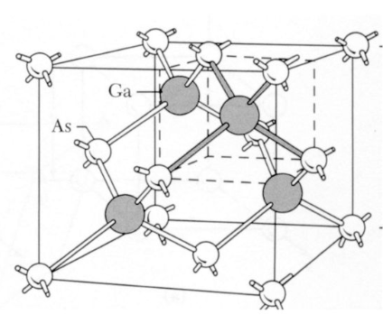
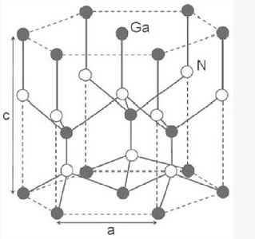

硅(Si)和锗（Ge）等元素都是属于IV族元素，原子的最外层都具有4个价电子。
大量的硅(Si)和锗（Ge）组成的晶体靠共价键结合，形成金刚石结构的晶格，。
| 闪锌矿结构：和金刚石结构类似，只是体内的原子由另一种原子组成，比如III-V族化合物，如砷化镓等 | 纤锌矿结构：II-VI族化合物，如硫化锌等 |
|  |  |
电子的一维非相对论的薛定谔波动方程为： $$\frac{\hbar^2}{2m}\cdot\frac{\partial^2\Psi(x,t)}{\partial x^2}+V(x)\Psi(x,t)=j\hbar\frac{\partial\Psi(x,t)}{\partial t} \tag{r2-6}$$
$\Psi(x,t)$为波函数，其意义是$|\Psi(x,t)|^2$为电子出现在位置$x$的概率，$|\Psi(x,t)|^2=|\Psi(x)|^2$与时间无关；
$V(x)$为与时间无关的势函数，和位置有关，和处于不同状态有关，比如自由电子的势函数$V(x)=0$，而晶体中则电子处于不同的势函数中；
$m$是电子的质量，$j=\sqrt{-1}, \hbar=\frac{h}{2\pi}, h=6.625\times 10^{-34}J\cdot s$ 是普朗克常量。
我们主要考虑电子出现的概率，所以采用变量分离的技巧，将薛定谔波动方程改写为：
$$\Psi(x,t)=\psi(x)\phi(t) \tag{r2-7}$$
代入并转换为： $$ \frac{-\hbar^2}{2m}\cdot\frac{1}{\psi(x)}\cdot\frac{\partial^2\psi(x)}{\partial x^2}+V(x)=j\hbar\cdot\frac{1}{\phi(t)}\cdot\frac{\partial\phi(t)}{\partial t}=E \tag{r2-9} $$，其中$E$为电子的总能量。
由此，可以得到薛定谔方程与时间无关的方程： $$ \frac{-\hbar^2}{2m}\cdot\frac{1}{\psi(x)}\cdot\frac{\partial^2\psi(x)}{\partial x^2}+V(x)=E \tag{r2-12} $$
或： $$\frac{\partial^2\psi(x)}{\partial x^2}+\frac{2m}{\hbar^2}(E-V(x))\psi(x)=0 \tag{r2-13} $$，其解要根据边界条件来求。
$$ \frac{-\hbar^2}{2m}\cdot\frac{1}{\psi(x)}\cdot\frac{\partial^2\psi(x)}{\partial x^2}+V(x)=j\hbar\cdot\frac{1}{\phi(t)}\cdot\frac{\partial\phi(t)}{\partial t}=E \tag{r2-9} $$
与时间$t$有关的部分，$$j\hbar\cdot\frac{1}{\phi(t)}\cdot\frac{\partial\phi(t)}{\partial t}=E \tag{r2-10} $$
上面的方程的解是： $$ \phi(t)=e^{-j\frac{E}{\hbar}t}$$，这是角频率$\omega=\frac{E}{\hbar}$的正弦波。
由于$|\Psi(x,t)|^2$为电子出现在位置$x$的概率，$|\Psi(x,t)|^2=|\psi(x)|^2$，在整个$x$范围（整个时间），电子必然会在某处存在，所以： $$ \int_{-\infty}^{+\infty}|\psi(x)|^2 dx = 1 \tag{r2-18} $$, 这个可以来决定波函数的各项系数。
$$\Psi(x,t)=\psi(x)\phi(t) \tag{r2-7}$$
与时间无关的波动方程：$\psi(x)$的方程： $$\frac{\partial^2\psi(x)}{\partial x^2}+\frac{2m}{\hbar^2}(E-V(x))\psi(x)=0 \tag{r2-13} $$
因为：$V(x)=0$，所以(r2-13)可以化简为： $$\frac{\partial^2\psi(x)}{\partial x^2}+\frac{2mE}{\hbar^2}\psi(x)=0 \tag{r2-19} $$
解该微分方程：$$\psi(x)=A\exp\left[\frac{jx\sqrt{2mE}}{\hbar}\right]+B\exp\left[\frac{-jx\sqrt{2mE}}{\hbar}\right] \tag{r2-20} $$
$$\Psi(x,t)=\psi(x)\phi(t) \tag{r2-7}$$
与时间有关的波动方程：$\phi(t)$的方程：$$j\hbar\cdot\frac{1}{\phi(t)}\cdot\frac{\partial\phi(t)}{\partial t}=E \tag{r2-10} $$
其解为：$\phi(t)=e^{-j\frac{E}{\hbar}t}$
综合可得：$$\Psi(x,t)=A\exp\left[\frac{j}{\hbar}\left(x\sqrt{2mE}-Et\right)\right]+B\exp\left[\frac{-j}{\hbar}\left(x\sqrt{2mE}+Et\right)\right] \tag{r2-22}$$
$$\Psi(x,t)=A\exp\left[\frac{j}{\hbar}\left(x\sqrt{2mE}-Et\right)\right]+B\exp\left[\frac{-j}{\hbar}\left(x\sqrt{2mE}+Et\right)\right] \tag{r2-22}$$
上面的解，系数为$A$的部分为沿$+x$传播的行波，系数为$B$的部分为沿$-x$传播的行波，若是明确知道电子沿某个方向传播，可以进行简化，比如，若确定沿$+x$方向传播，可以化简为： $$\Psi(x,t)=A\exp[j(kx-\omega t)]=A\exp(jkx)\exp(-j\omega t) \tag{r2-23}$$，其中$k=\frac{2\pi}{\lambda}=\frac{\sqrt{2mE}}{\hbar}$为波数，波数的方向与波的方向一致, $\omega=\frac{E}{\hbar}=2\pi\nu$为角频率, $\nu$是波的频率。
由欧拉公式可以得到： $$ \Psi(x,t)=A\sin(kx-\omega t) $$
从上面的公式可以得到自由电子的能量：$E=\frac{\hbar^2k^2}{2m}$，可见，当$k$是连续变化的，$E$也是连续的。
根据布洛赫数学定理，所有周期性变化的势函数的单电子波函数写为： $$\psi(x)=u(x)e^{jkx} \tag{r3-1}$$，其中$k$为运动常量，$u(x)$为以$(a+b)$为周期的函数。
根据前面的波动方程： $$\Psi(x,t)=\psi(x)\phi(t)=u(x)e^{jkx}\cdot e^{-j\frac{E}{\hbar}t} \tag{r3-2}$$
或： $$\Psi(x,t)=\psi(x)\phi(t)=u(x)e^{j(kx-\frac{E}{\hbar}t)} \tag{r3-3}$$，这里$k$即为波数。
如上图，设$(0\lt x \lt a)$区域I内的$V(x)=0$, 对式(r3-1)二阶求导： $$\psi(x)=u(x)e^{jkx} \tag{r3-1}$$, 代入与时间无关的波动方程: $$ \frac{d^2\psi(x)}{d x^2}+\frac{2m}{\hbar^2}(E-V(x))\psi(x)=0 \tag{r2-13} $$，可以得到关系式： $$ \frac{d^2u_1(x)}{d x^2}+2jk\frac{du_1(x)}{dx}-(k^2-\alpha^2)u_1(x)=0 \tag{r3-4} $$，其中,$u_1(x)$为区域I中波函数的振幅，参数$\alpha^2=\frac{2mE}{\hbar^2}$
如上图，设$(-b \lt x \lt 0)$区域II内的$V(x)=V_0$, 相同方法，可以得到关系式： $$ \frac{d^2u_2(x)}{d x^2}+2jk\frac{du_2(x)}{dx}-(k^2-\alpha^2+\frac{2mV_0}{\hbar^2})u_2(x)=0 \tag{r3-6} $$，其中,$u_2(x)$为区域II中波函数的振幅
定义:$$\frac{2m}{\hbar^2}(E-V_0)=\alpha^2-\frac{2mV_0}{\hbar^2}=\beta^2 \tag{r3-7}$$，注意，一般情况下，$E \lt V_0$, 所以 $\beta$ 是虚数。
$$ \frac{d^2u_2(x)}{d x^2}+2jk\frac{du_2(x)}{dx}-(k^2-\beta^2)u_2(x)=0 \tag{r3-8} $$
方程(r3-4)的解为： $$ u_1(x)=A\exp(j(\alpha-k)x)+B\exp(-j(\alpha+k)x), 0 \lt x \lt a \tag{r3-9} $$
方程(r3-8)的解为： $$ u_2(x)=C\exp(j(\beta-k)x)+D\exp(-j(\beta+k)x), -b \lt x \lt 0 \tag{r3-10} $$
应用边界连续条件：
联立上面的方程，可以求解出$A,B,C,D$四个系数，得到： $$ \frac{-(\alpha^2+\beta^2)}{2\alpha\beta}\sin(\alpha \cdot a)\sin(\beta \cdot b)+\cos(\alpha \cdot a)\cos(\beta \cdot b)=\cos(k(a+b)) \tag{r3-19} $$
这个方程将$k$与总能量$E$(通过$\alpha$)和势函数$V_0$(通过$\beta$)联系起来。
由于$\beta$为虚数，设$\beta=j\gamma$，这里$\gamma$为实数，式(r3-19)可以转换为：$$ \frac{\gamma^2-\alpha^2}{2\alpha\gamma}\sin(\alpha \cdot a)\sinh(\gamma \cdot b)+\cos(\alpha \cdot a)\cosh(\gamma \cdot b)=\cos(k(a+b)) \tag{r3-21} $$
为方便图形求解，令$b \to 0, V_0 \to \infty$, 得到： $$ P'\frac{\sin(\alpha \cdot a)}{\alpha \cdot a}+\cos(\alpha \cdot a)=\cos(ka) \tag{r3-24} $$，其中$P'=\frac{mV_0ba}{\hbar^2}$
$$ f(\alpha\cdot a)=P'\frac{\sin(\alpha \cdot a)}{\alpha \cdot a}+\cos(\alpha \cdot a)=\cos(ka) \tag{r3-24} $$，其中$P'=\frac{mV_0ba}{\hbar^2}$
在上式中，$P'$为常数，$f(\alpha\cdot a)$的图像如下图所示：
$$ f(\alpha\cdot a)=P'\frac{\sin(\alpha \cdot a)}{\alpha \cdot a}+\cos(\alpha \cdot a)=\cos(ka) \tag{r3-24} $$，其中$P'=\frac{mV_0ba}{\hbar^2}$
$\alpha^2=\frac{2mE}{\hbar^2}$, $f(\alpha\cdot a)=P'\frac{\sin(\alpha \cdot a)}{\alpha \cdot a}+\cos(\alpha \cdot a)=\cos(ka)$
$f(\alpha\cdot a)=P'\frac{\sin(\alpha \cdot a)}{\alpha \cdot a}+\cos(\alpha \cdot a)=\cos(ka)$，由于$\cos(ka)=\cos(ka\pm 2n\pi)$，所以可以将曲线以$2n\pi$为周期进行平移，下图显示了在$\frac{-\pi}{a} \lt k \lt \frac{\pi}{a}$区间的$E-k$关系图，这个区间称为简约（第一）布里渊区，如课本所示，还有第2、3等布里渊区。
$$ \cos(ka)=P'\frac{\sin(\alpha\cdot a)}{\alpha\cdot a}+\cos(\alpha\cdot a) $$
$$ -1=8\frac{\sin(\alpha\cdot a)}{\alpha\cdot a}+\cos(\alpha\cdot a) $$，当$ka=\pi$时，可以从图中看到，$\alpha_1 \cdot a=\sqrt{\frac{2mE_1}{\hbar^2}}=\pi $, 求出$E_1=2.972\times 10^{-19}J$, 用数值近似求解求出$1+8\frac{\sin(\alpha\cdot a)}{\alpha\cdot a}+\cos(\alpha\cdot a)=0$在$(\pi, 2\pi)$内的第二个解，得到$\alpha_2 \cdot a=\sqrt{\frac{2mE_2}{\hbar^2}}=5.141$, 求出$E_2=7.958\times 10^{-19}J$，于是禁带宽度为： $E_g=E_2-E_1=4.986\times 10^{-19}J=3.12eV$
能带结构可以解释固体中导体（没有能隙）、半导体（能隙 < 3 eV)、绝缘体 (能隙 > 3 eV) 三大类区别的由来。材料的导电性是由“传导带”中含有的电子数量决定。当电子从“价带”获得能量而跳跃至“传导带”时，在外电场的作用下，未填满的导带能带中的电子产生净电流，材料表现出导电性。
一般常见的金属材料，因为其传导带与价带之间的“能隙”非常小，在室温下电子很容易获得能量而跳跃至传导带而导电，而绝缘材料则因为能隙很大（通常大于3电子伏特），电子很难跳跃至传导带，所以无法导电。一般半导体材料的能隙约为1至3电子伏特，介于导体和绝缘体之间。因此只要给予适当条件的能量激发，或是改变其能隙之间距，此材料就能导电。